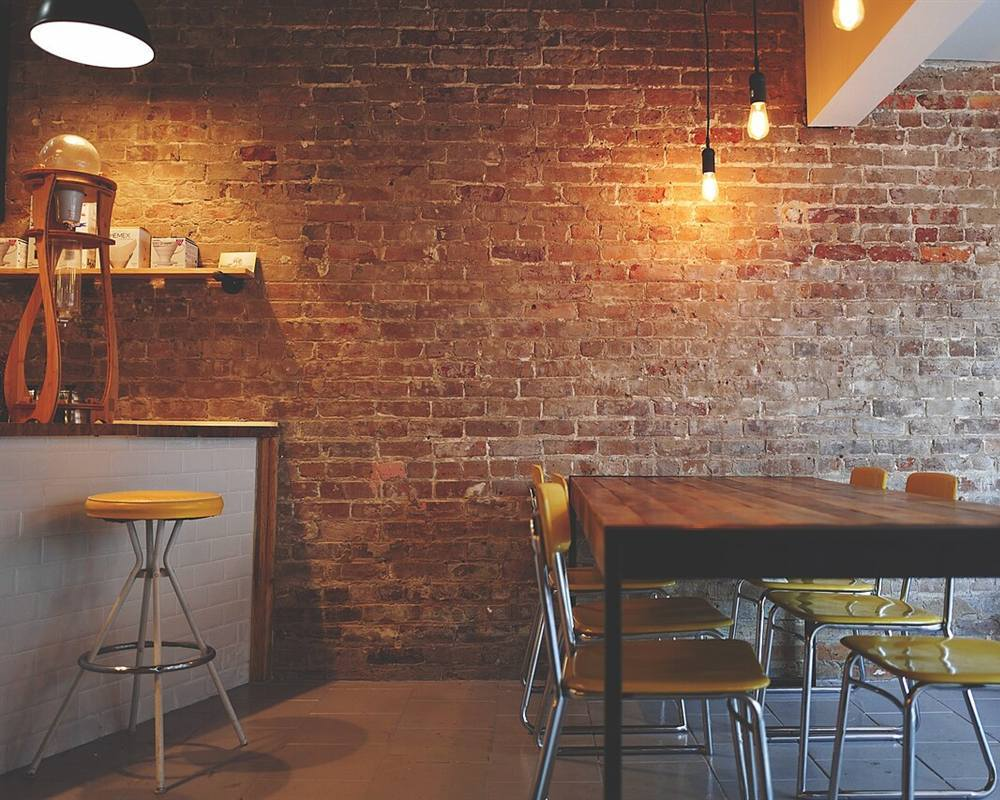
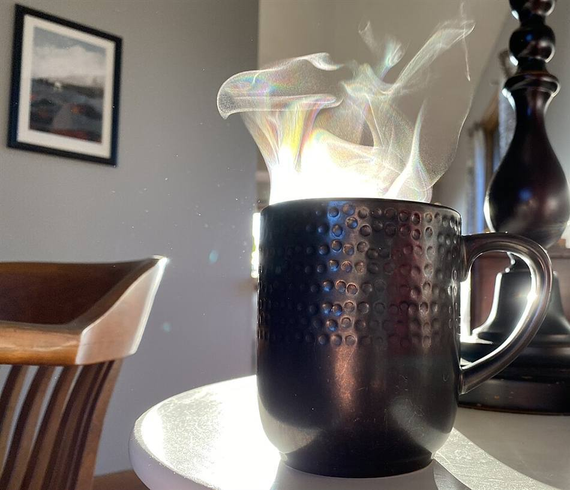

イメージ例
仕事帰りに立ち寄って、ゆっくり過ごすことができました。落ち着いた時間が流れていて、肩の力が抜けた気がします。また寄りたいです。
試作サンプル(実店舗の公式サイトではありません)
写真はフリー素材のイメージです。実際のお店とは異なります
このページの口コミは、サイトのイメージをお伝えするために制作側が作成したサンプルです。実際のお客様の声ではありません。
以下は「こんな声が集まるお店になったら」というイメージ例です。実際の感想は、Instagramやご来店でご確認ください。

仕事帰りに立ち寄って、ゆっくり過ごすことができました。落ち着いた時間が流れていて、肩の力が抜けた気がします。また寄りたいです。

散歩の途中に気軽に入れる雰囲気がありがたいです。一人でも入りやすく、のんびりできました。
友人との待ち合わせにちょうどよく、おしゃべりも楽しめました。帰り道まで、穏やかな気分が続きました。